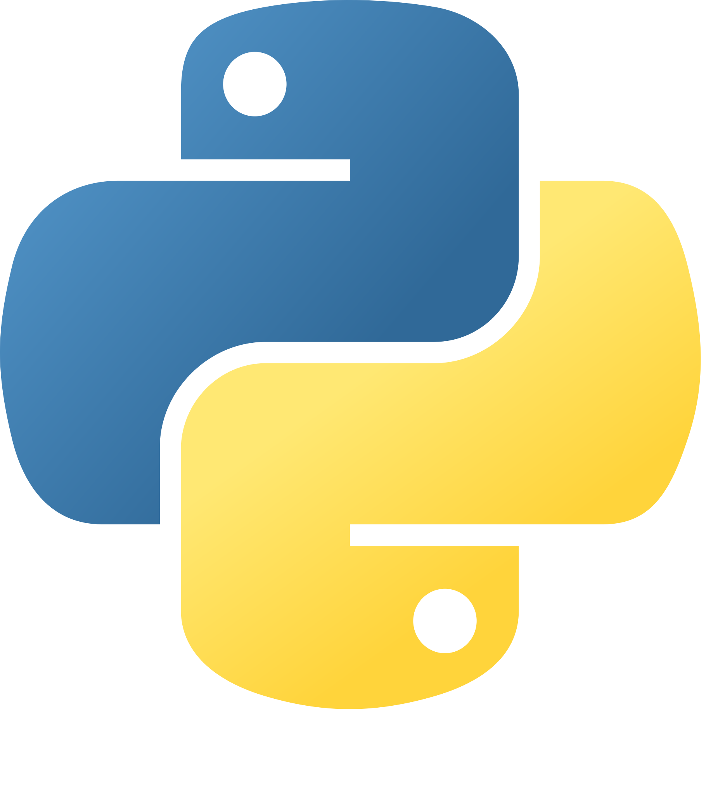

Todo sobre los decoradores
{kind=link}
üëã
OpenSouthCode
{kind=link}
Sobre mí Nekmo

Programador Python |
Python
Decoradores
@decorator
def function():
pass¿Qué son los decoradores?
Definición
Definición
Una función que devuelve otra función, normalmente aplicando una transformación de función usando la sintaxis @wrapper.
Definición 2
Definición
Un decorador es una "función" que encapsula a otra "función" para modificar o extiender su comportamiento sin modificar su código.
—Yo mismo
Definición 3
Definición
Un decorador es una "función" que encapsula a otra "función" para modificar o extiender su comportamiento sin modificar su código.
—Yo mismo
@decorator
def function():
passAbraza
Ejemplos de uso
Un decorador
@timeitque mide el tiempo de ejecución de una función, sin modificar su código.Un decorador
@retryque vuelve a ejecutar una función si falla, sin modificar su código.Un decorador
@login_requiredque comprueba si un usuario está autenticado, permitiendo sólo la ejecución de la función si lo está.... y mucho más.
¿Y qué es esto del arroba?
Anotaciones de Java 1.5
Ejecución equivalente
# Forma con arroba
@decorator
def hello_world():
print("Hello world!")
hello_world()
# Forma sin arroba
def hello_world():
print("Hello world!")
hello_world = decorator(hello_world)
hello_world()Cómo crear un decorador
Decorador básico
def log(func):
def wrapper(*args, **kwargs):
print(f"La función {func.__name__} recibirá los argumentos {args} "
f"y los parámetros {kwargs}.")
result = func(*args, **kwargs)
print(f"La función {func.__name__} ha devuelto {result}.")
return result
return wrapper
def hello(word):
print(f"Hello {word}!")
return True
hello = log(hello)
hello("world")Resultado
La función hello recibirá los argumentos ('word',) y los parámetros {}.
Hello word!
La función hello ha devuelto True.Confusión
Función anónima
def log(func):
def wrapper(*args, **kwargs):
...
result = func(*args, **kwargs)
...
return result
return wrapper
hello_wrapped = log(hello)
hello_wrapped("world")¿Por qué se llaman decoradores?
Quejas sobre el nombre
Cita
Ha habido varias quejas sobre la elección del nombre "decorador" para esta función. El principal es que el nombre no concuerda con su uso en el libro de GoF. [...] Es muy posible que aparezca un nombre mejor.
—PEP 318
Usos decoradores
Alterar los parámetros de entrada a la función.
Modificar el resultado de la función.
Condicionar, repetir o alterar la forma de ejecución de la función.
Realizar acciones antes o/y después de la ejecución de la función.
Alterar parámetros de entrada
def int_args(func):
def wrapper(*numbers):
numbers = [int(number) for number in numbers]
return func(*numbers)
return wrapperModificar la salida de la función
def response_data(func):
def wrapper(*args, **kwargs):
data = func(*args, **kwargs)
return Response(data=data, status=200)
return wrapperCondicionar la ejecución de la función
def is_authenticated(func):
def wrapper(request):
if request.user.is_authenticated():
return func(request)
else:
return Response(status=401)
return wrapperRealizar acciones antes y después
def timeit(func):
def wrapper(*args, **kwargs):
start = time.time()
result = func(*args, **kwargs)
end = time.time()
print(f"La función {func.__name__} ha tardado "
f"{end - start} segundos.")
return result
return wrapperEncadenar decoradores
@retry
@timeit
@log
def hello():
print("Hello world!")
# Forma alternativa
hello = retry(timeit(log(hello)))El decorador wraps
>>> @log
>>> def hello_world():
... """Prints 'Hello world!'."""
... print("Hello world!")
>>>
>>> print(hello_world.__name__)
'wrapper'
>>> print(hello_world.__doc__)
NoneDecorador wraps
from functools import wraps
def log(func):
@wraps(func)
def wrapper(*args, **kwargs):
...
return wrapperNo sólo funciones
Aplicado a clases
@log
class A:
def __init__(self):
print("Creando una instancia de A.")Aplicado a métodos
class A:
@log
def foo(self):
print("Ejecutando foo.")Decorador creado usando una clase
>>> class Log:
... def __init__(self, func):
... self.func = func
...
... def __call__(self, *args, **kwargs):
... ...
... result = self.func(*args, **kwargs)
... ...
... return result
...
>>> @Log
... def hello_world():
... print("Hello world!")Decorador con argumentos
Ejemplo de decorador con argumentos
@repeat(num_times=5)
def hello(word):
print(f"Hello {word}!")Código del decorador con argumentos
def repeat(num_times=3):
def decorator(func):
def wrapper(*args, **kwargs):
for _ in range(num_times):
result = func(*args, **kwargs)
return result
return wrapper
return decoratorDecorador con argumentos usando una clase
class Repeat:
def __init__(self, num_times=3):
self.num_times = num_times
def __call__(self, func):
self.func = func
return self.wrapper
def wrapper(self, *args, **kwargs):
for _ in range(self.num_times):
result = self.func(*args, **kwargs)
return resultDecorador con parámetros opcionales
@repeat
def hello(word):
print(f"Hello {word}!")
@repeat(num_times=5)
def hello(word):
print(f"Hello {word}!")Con y sin parámetros
def repeat(func):
def wrapper(*args, **kwargs):
for _ in range(3):
result = func(
*args, **kwargs
)
return result
return wrapper
#
#def repeat(num_times=3):
def decorator(func):
def wrapper(*args, **kwargs):
for _ in range(num_times):
result = func(
*args, **kwargs
)
return result
return wrapper
return decoratorCondicionar parámetros
def repeat(_func=None, num_times=3):
def decorator(func):
...
if _func is None:
return decorator
else:
return decorator(_func)Código completo decorador con parámetros opcionales
def repeat(_func=None, num_times=3):
def decorator(func):
def wrapper(*args, **kwargs):
for _ in range(num_times):
result = func(*args, **kwargs)
return result
return wrapper
if _func is None:
return decorator
else:
return decorator(_func)Código decorador con parámetros opcionales usando una clase
class Repeat:
def __init__(self, func=None, num_times=3):
self.func = func
self.num_times = num_times
def __call__(self, *args, **kwargs):
if self.func is None:
self.func = args[0]
return self.wrapper
else:
return self.wrapper(*args, **kwargs)
def wrapper(self, *args, **kwargs):
for _ in range(self.num_times):
result = self.func(*args, **kwargs)
return resultExpertos en decoradores
¡Muchas gracias a todos!
Código QR
{kind=link}
Contactar
üåê Sitio web: nekmo.com
üì´ Email: contacto@nekmo.com
üê¶ Twitter: @nekmocom
üì± Telegram: @nekmo
üí° Jabber: nekmo@nekmo.org